SOC140 · Phishing Mail Detected: Suspicious Task Scheduler
- Categoria
- Phishing
- Caso
- SOC140
- Registro
- Verdadeiro positivo
Resumo
Alerta de e-mail de phishing enviado por aaronluo@cmail.carleton.ca para mark@letsdefend.io, com o assunto COVID19 Vaccine e um anexo. O hash do anexo foi classificado como trojan no VirusTotal e o ANY.RUN revelou um link e um servidor de C2. O Email Security bloqueou a mensagem (Not Delivered) e não há indício de que o anexo tenha sido aberto. Classificado como verdadeiro positivo.
IOCs
| Tipo | Valor | Observação |
|---|---|---|
| SHA-256 | 39fb927c32221134a423760c5d1f58bca4cbbcc87c891c79e390a22b63608eb4 | Anexo do e-mail, classificado como trojan no VirusTotal. |
| IP | 69[.]39[.]225[.]3 | Servidor de C2 identificado no ANY.RUN. |
aaronluo@cmail.carleton.ca | Remetente. | |
mark@letsdefend.io | Destinatário. |
Passo a passo da investigação
1. Abertura do chamado
No Monitoring, abri o Investigation Channel.
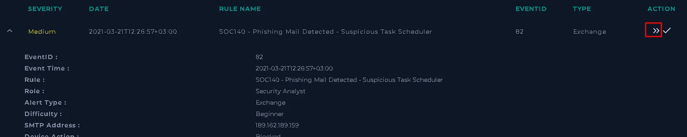
Criei o ticket a partir do alerta.
2. Correlação de SMTP e Log Management
Usei o SMTP Address do alerta como filtro no Log Management.
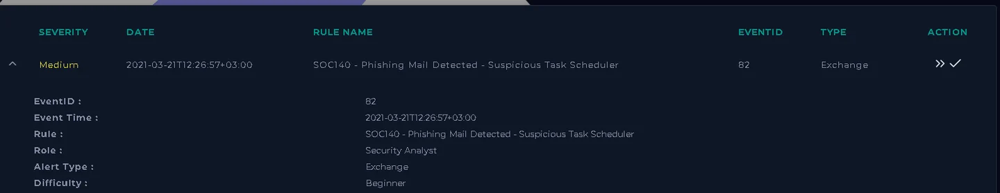
O Log Management retornou o Destination Address, que identifica o destinatário.
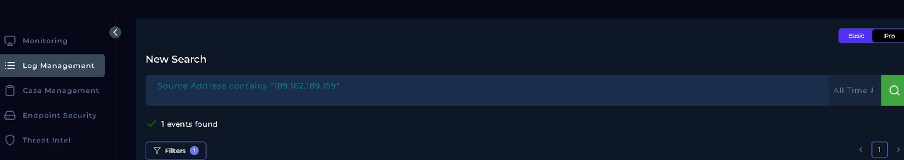
Copiei o endereço de e-mail para consultar no Email Security.
3. Revisão da mensagem no Email Security
Abri a aba Email Security.
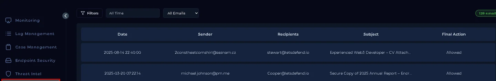
Filtrei pelo e-mail do destinatário.
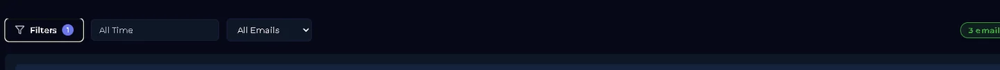
Abri a mensagem e identifiquei o anexo e o hash MD5.
4. Reputação do anexo
Consultei o hash no VirusTotal.
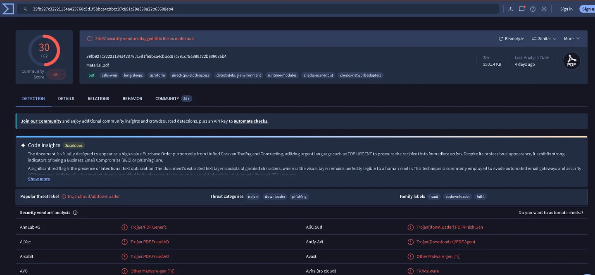
Pesquisei o MD5 no ANY.RUN e identifiquei um link e o servidor de C2 associados ao anexo.
Pesquisei o IP de C2 69[.]39[.]225[.]3 no Log Management.
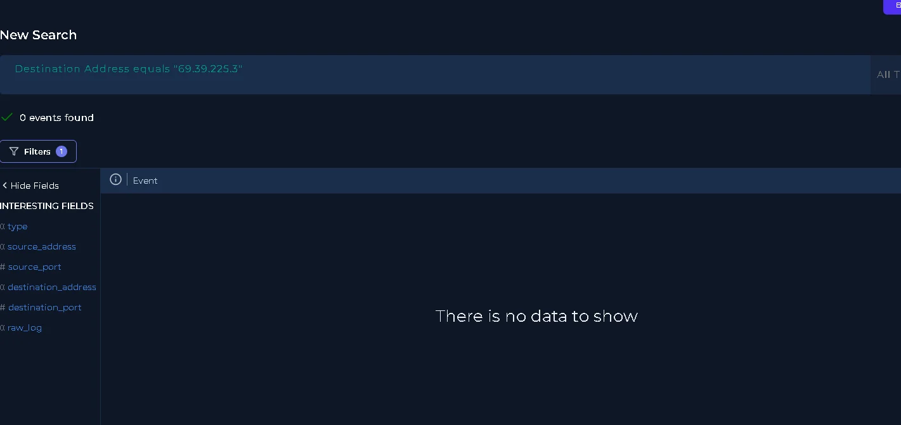
5. Registro do resultado no playbook
Voltei ao ticket para preencher o playbook.
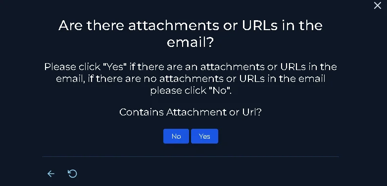
Respondi que a mensagem continha anexo ou URL.
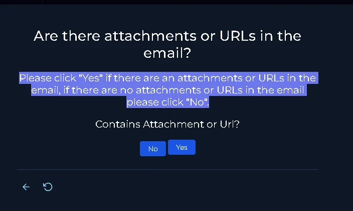
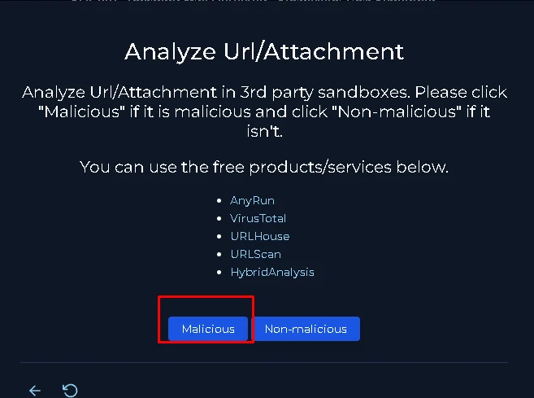
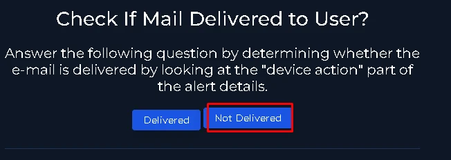
Registrei a mensagem como Not Delivered, pois foi bloqueada, e incluí as informações obtidas nos logs.
A nota do playbook registrou um anexo considerado malicioso pelo VirusTotal e uma mensagem bloqueada pelo Email Security. A análise não confirmou a abertura do anexo, e o caso foi classificado como verdadeiro positivo.
Conclusão
O anexo do e-mail COVID19 Vaccine foi classificado como trojan. O Email Security bloqueou a entrega e o arquivo não foi aberto, o que sustenta a classificação como verdadeiro positivo.
Lições aprendidas
- Partir do endereço SMTP para encontrar o destinatário e o e-mail no Email Security.
- Usar sandbox (ANY.RUN) para extrair o link e o C2 do anexo.
- Confirmar a entrega da mensagem antes de definir o impacto.
Exercício simulado. Algumas capturas foram recortadas ou tiveram campos ocultados.